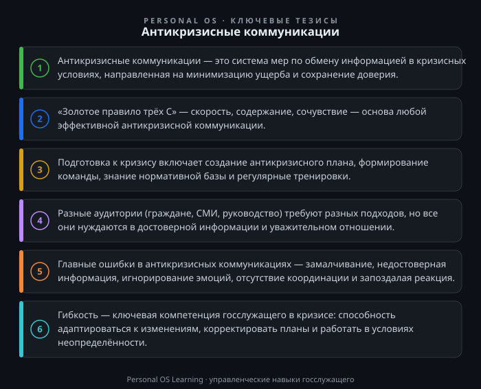

Кризис — это всегда проверка на прочность. Для государственного служащего кризисная ситуация — не абстрактный сценарий из учебника, а реальность, с которой он может столкнуться в любой момент: от сбоя в работе информационной системы до чрезвычайной ситуации муниципального или федерального масштаба. В такие моменты от качества коммуникации зависят не только репутация органа власти, но и безопасность людей, их доверие к государству, стабильность общественной обстановки.
Гибкость и готовность к изменениям — та компетенция, которая позволяет госслужащему не растеряться в кризисе, а действовать чётко, быстро и адекватно. Антикризисные коммуникации — это не просто умение «красиво говорить». Это система принципов, инструментов и навыков, которые позволяют сохранить контроль над ситуацией, не допустить паники и дезинформации, выстроить конструктивный диалог с гражданами, СМИ и вышестоящими органами.
В этой статье мы разберём, что такое антикризисные коммуникации в контексте государственной службы, какие принципы лежат в их основе, как подготовиться к кризису заранее и как действовать в его разгар. Вы получите конкретные инструменты, которые можно применить уже завтра, и практические задания для отработки навыков.
Антикризисные коммуникации — это комплекс мер по обмену информацией между органом власти и его аудиториями (гражданами, СМИ, сотрудниками, вышестоящими инстанциями) в условиях кризиса. Цель таких коммуникаций — минимизировать ущерб от кризиса, сохранить или восстановить доверие, обеспечить координацию действий и предотвратить распространение ложной информации.
Для госслужащего это не просто «работа с прессой». Это часть его профессиональной деятельности, закреплённая в должностных регламентах и нормативных требованиях. Например, Федеральный закон «О порядке рассмотрения обращений граждан Российской Федерации» Федеральный закон от 02.05.2006 № 59-ФЗ «О порядке рассмотрения обращений граждан Российской Федерации» устанавливает обязанность государственных органов своевременно и объективно рассматривать обращения граждан. В кризисной ситуации количество таких обращений многократно возрастает, и умение работать с ними в условиях стресса становится критически важным.
Почему это компетенция, а не просто навык? Потому что антикризисная коммуникация требует не только знания техник, но и личностных качеств: стрессоустойчивости, гибкости, способности быстро перестраиваться. Кризис всегда вносит изменения в привычный порядок работы, и госслужащий должен быть готов к этим изменениям — как на уровне действий, так и на уровне коммуникации.
Есть три принципа, на которых строится любая эффективная антикризисная коммуникация. Их можно запомнить как «Золотое правило трёх С»: Скорость, Содержание, Сочувствие.
Скорость. В кризисной ситуации информация распространяется мгновенно. Если орган власти молчит, вакуум заполняют слухи и домыслы. Поэтому первое сообщение должно появиться как можно раньше — в идеале в течение первого часа после начала кризиса. Оно не обязано содержать все детали, но должно подтвердить, что ситуация известна, находится под контролем и информация будет обновляться. Для госслужащего это означает: не ждите указаний сверху, а действуйте в рамках своей компетенции и полномочий.
Содержание. Сообщение должно быть достоверным. В кризисе любая неточность, даже невольная, может быть воспринята как ложь и нанести непоправимый ущерб доверию. Если вы не знаете точных данных, говорите об этом прямо: «На данный момент информация уточняется». Гораздо лучше признать неполноту знаний, чем выдать предположение за факт. При этом важно говорить на понятном языке, без канцелярита и общих фраз.
Сочувствие. Люди в кризисной ситуации испытывают страх, тревогу, гнев. Прежде чем требовать от них понимания и сотрудничества, нужно признать их чувства. Фраза «Мы понимаем ваше беспокойство» — это не пустая формальность, а важный элемент установления контакта. Эмпатия в антикризисной коммуникации — это не слабость, а инструмент снижения напряжения.
Эти принципы универсальны, но в государственной службе они приобретают особое значение, потому что цена ошибки здесь — доверие к власти в целом.
Кризис невозможно предсказать, но к нему можно подготовиться. Готовность — это то, что отличает профессионала от любителя. В государственных органах подготовка к кризисным коммуникациям обычно включает несколько элементов.
Антикризисный план. Это документ, в котором определены сценарии возможных кризисов, ответственные лица, порядок действий и шаблоны первичных сообщений. Такой план не должен быть формальным документом, который пылится на полке. Он должен быть рабочим инструментом, который регулярно актуализируется и отрабатывается на учениях. Если в вашем органе такого плана нет, его создание — ваша первая практическая задача.
Команда антикризисных коммуникаций. В кризисной ситуации решения должны приниматься быстро, поэтому важно заранее определить, кто за что отвечает: кто готовит заявления, кто взаимодействует со СМИ, кто отвечает на обращения граждан, кто координирует работу с вышестоящими органами. Чёткое распределение ролей позволяет избежать хаоса и дублирования функций.
Регламенты и нормативная база. Взаимодействие со СМИ и гражданами в кризисных ситуациях регулируется в том числе нормативными актами. Например, Закон РФ «О средствах массовой информации» Закон Российской Федерации от 27.12.1991 № 2124-I «О средствах массовой информации» определяет порядок распространения информации. Важно знать свои полномочия и границы ответственности, чтобы действовать в правовом поле.
Обучение и тренировки. Как и любой навык, антикризисные коммуникации требуют отработки. Регулярные тренировки — от простых «штабных игр» до полномасштабных учений — позволяют довести действия до автоматизма и выявить слабые места в планах.
Кризисная коммуникация — это не монолог, а диалог с разными аудиториями, у каждой из которых свои ожидания и потребности.
Граждане. Это главная аудитория для госслужащего. Люди хотят знать, что происходит, как это повлияет на их жизнь и что им делать. Коммуникация с гражданами должна быть максимально простой и конкретной. Используйте официальные каналы: сайт органа власти, страницы в социальных сетях, горячие линии. Помните, что в кризисной ситуации люди часто находятся в состоянии стресса, поэтому формулируйте сообщения чётко, без двусмысленностей. Например, вместо «Проводятся работы по устранению последствий» лучше написать «Авария будет устранена в течение 6 часов, на это время подача воды будет ограничена».
СМИ. Журналисты в кризисной ситуации — ваши союзники, если вы работаете с ними правильно. Они могут донести вашу информацию до широкой аудитории быстрее, чем любые официальные каналы. Основные правила: предоставляйте точную информацию, отвечайте на вопросы честно, не говорите «без комментариев» — это воспринимается как признание вины. Если вы не можете ответить на вопрос, скажите, когда сможете это сделать.
Вышестоящие органы и руководство. В кризисной ситуации критически важно информировать руководство своевременно и полно. Руководитель должен получать информацию от вас, а не из СМИ или от других источников. Регулярные доклады о ситуации, принятых мерах и возникающих проблемах — это не бюрократия, а необходимая часть управления кризисом.
Ошибки в антикризисных коммуникациях могут превратить локальный инцидент в масштабный кризис. Рассмотрим наиболее частые из них.
Замалчивание. Попытка скрыть проблему или «не выносить сор из избы» почти всегда приводит к обратному эффекту. Информация всё равно станет известна, но доверие будет подорвано. Прозрачность — это не проявление слабости, а стратегия сохранения доверия.
Недостоверная информация. Желание успокоить людей может привести к тому, что вы сообщите непроверенные данные. Когда они не подтвердятся, последствия будут хуже, чем если бы вы сразу сказали правду. Всегда проверяйте факты, прежде чем их озвучивать.
Игнорирование эмоций. Формальные отписки и канцелярский язык в кризисной ситуации воспринимаются как равнодушие. Люди хотят видеть, что власть понимает их чувства и заботится о них. Даже в официальных сообщениях можно и нужно проявлять эмпатию.
Отсутствие координации. Когда разные сотрудники дают противоречивую информацию, это создаёт хаос и подрывает доверие. Все сообщения должны проходить через единый центр координации, а сотрудники должны знать, что им разрешено говорить, а что нет.
Запоздалая реакция. Помните о принципе скорости: лучше сказать быстро и неполно, чем поздно и исчерпывающе. В первые часы кризиса люди особенно уязвимы для дезинформации, и ваша задача — заполнить информационный вакуум достоверными данными.
Кризис — это всегда изменение. Изменение обстановки, правил, ожиданий. Гибкость — это способность быстро адаптироваться к этим изменениям, не теряя цели и ориентиров. В контексте антикризисных коммуникаций гибкость проявляется в нескольких аспектах.
Готовность пересмотреть план. Антикризисный план — это не догма, а отправная точка. Реальность всегда сложнее любого сценария, поэтому важно уметь корректировать свои действия по мере поступления новой информации.
Способность менять коммуникационную стратегию. То, что работает на начальном этапе кризиса, может оказаться неэффективным через день. Например, сначала достаточно коротких сообщений с подтверждением фактов, а позже требуется более развёрнутый диалог с гражданами о причинах и последствиях.
Умение работать в условиях неопределённости. Кризис часто развивается непредсказуемо. Вместо того чтобы ждать полной ясности, нужно действовать в условиях частичной неопределённости, принимая решения на основе имеющейся информации и корректируя их по мере необходимости.
Открытость к обратной связи. В кризисной ситуации важно не только говорить, но и слушать. Обратная связь от граждан, СМИ, сотрудников позволяет вовремя заметить нарастающие проблемы и скорректировать действия.
Предлагаю вам выполнить несколько заданий, которые помогут применить полученные знания на практике. Каждое задание рассчитано на 15–30 минут и может быть выполнено самостоятельно.
Задание 1. Анализ недавнего кризиса. Вспомните кризисную ситуацию, которая произошла в вашем органе власти или в соседнем регионе за последний год. Проанализируйте, как были организованы коммуникации: насколько быстро появилась первая официальная информация, была ли она достоверной, проявлялась ли эмпатия к пострадавшим. Запишите три ключевых вывода, которые вы сделали для себя.
Задание 2. Создание антикризисного плана для вашего отдела. Возьмите типовой сценарий кризиса, актуальный для вашей сферы деятельности (например, сбой в работе информационной системы, выявление нарушений, несчастный случай). Составьте краткий план коммуникаций: определите ответственных лиц, подготовьте шаблоны первичных сообщений для граждан и СМИ, пропишите порядок информирования руководства. Это задание лучше выполнять вместе с коллегами.
Задание 3. Подготовка заявления по гипотетическому сценарию. Представьте, что в вашем органе произошла ситуация, которая привлекла внимание региональных СМИ. Составьте первое официальное заявление, используя «Золотое правило трёх С»: скорость, содержание, сочувствие. Проверьте, отвечает ли ваше заявление всем трём принципам.
Задание 4. Проверка вашей гибкости. Вспомните ситуацию, когда вам пришлось менять свои планы в связи с изменившимися обстоятельствами. Оцените, насколько эффективно вы адаптировались. Что вы сделали хорошо? Что можно было сделать лучше? Сформулируйте один конкретный шаг, который вы предпримете, чтобы повысить свою гибкость в условиях кризиса.
Антикризисные коммуникации — это не роскошь, а необходимость для каждого государственного служащего. Кризис может наступить в любой момент, и от того, как мы отреагируем, зависят жизни людей и доверие к власти. Освоив принципы скорости, достоверности и эмпатии, создав антикризисные планы и регулярно тренируясь, вы сможете не просто справляться с кризисами, но и укреплять доверие граждан к государственным институтам.
Помните: гибкость и готовность к изменениям — это не врождённые качества, а навыки, которые можно и нужно развивать. Начните с малого — выполните практические задания, обсудите их с коллегами, предложите создать антикризисный план в вашем отделе. Именно такие конкретные шаги делают госслужащего по-настоящему готовым к любым вызовам.

Открыть инфографику в полном размере ↗
Отправить отметку в базу Пройти тест по теме